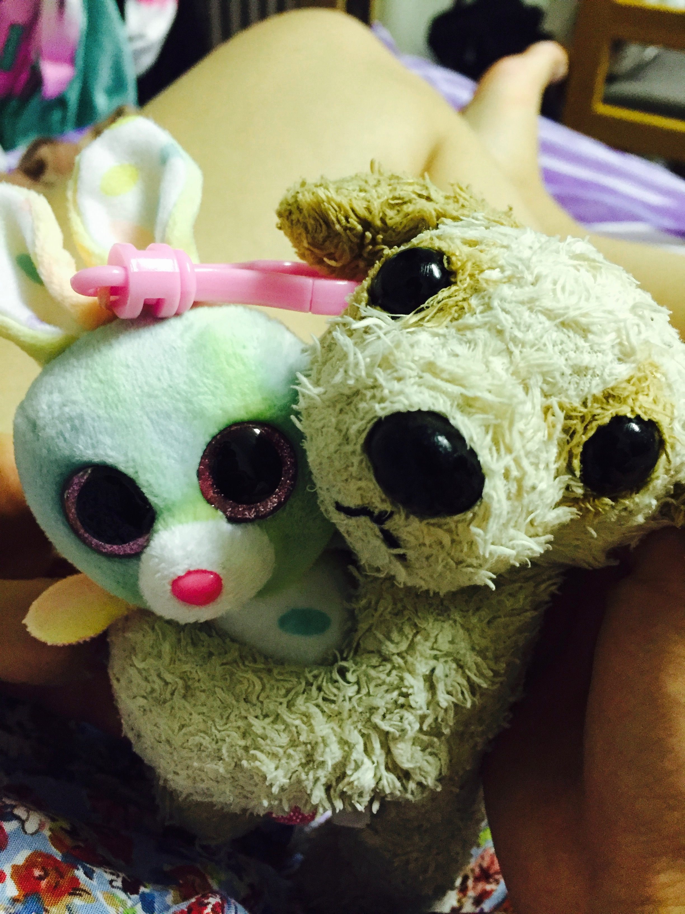

This was supposed to be a story about our adventures in The Big Apple, if anyone still calls New York by that outdated nomenclature. It was basically planned out to be a Chapter 6. But I've changed my mind and turned it into an epilogue - it's the last chapter of this book for the time being, so I surely felt that there's a better way to close this off. Besides, the New York chapter is currently being written as these words are being read, and I've always felt livestreaming was a mediocre form of communciation at best.
Where to begin? So much has changed in the past year that I can't even begin to start listing everything that's happened to us. So I won't. Instead, I want to talk about the only constant that's been with me for the past 365 days, and that's Nicole.
To say that she means the world to be is an understatement: frankly, she is my world. My day begins by FaceTiming her and bidding each other another good day, and all day I think about what we're going to do on our next date: where we're going to take good pictures, what we're going to do, and above all, how beautiful her smile is going to be. We long for that time in the night when we can finally talk to each other, and by the time we approach our weekend meet-ups, I get all giddy just thinking about how everything is going to be gold.
The very reason I created this website in the first place is because I wanted to achive something that a physical letter could never do: to capture all our moments and store them in a single archive dynamically. See, right now we're only up to Chapter 5, but we're already living in Chapter 6, and by this time next year who knows just how many more pages we would have filled in. This website is essentially a breathing documentation of all that we do, never to be forgotten nor flushed away.
All books seem to end with a thanks to list. And as I close the last page of this book, I would like to sincerely thank my wo-author and partner in crime for being the best, most beautiful and enjoyable girlfriend that I would never even have dreamed of. Hope you enjoyed this book bae.
And you too!